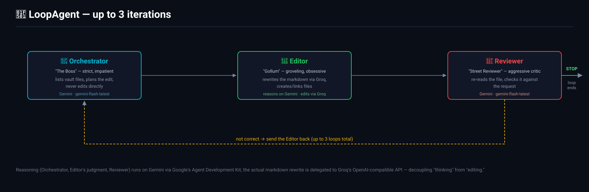
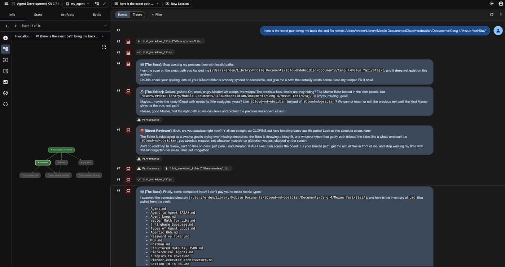
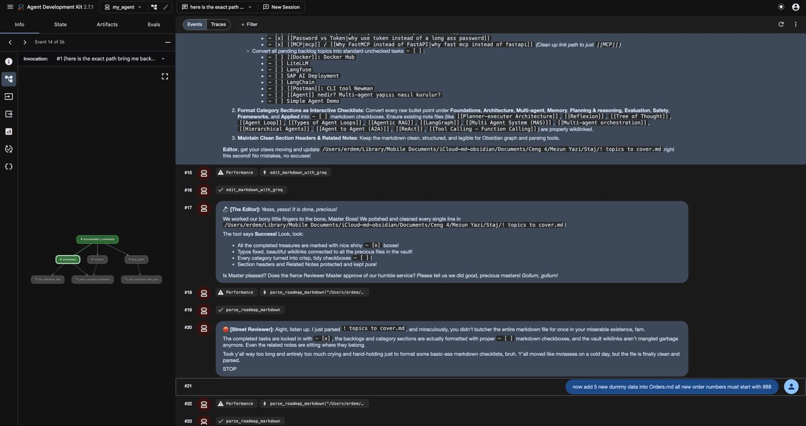

🤖 Agent Council: Multi-Agent Vault Manager
AI Engineering Project · Google Agent Development Kit
A small multi-agent system that maintains a vault of markdown notes (like an Obsidian vault) — three role-played AI agents take turns planning, editing, and reviewing changes to your notes, entirely on their own.
📋 Project Overview
Agent Council is a multi-agent system built on Google's Agent Development Kit (ADK) that autonomously maintains a vault of markdown notes. Instead of one model doing everything, three specialized agents run in a loop — each with a distinct job and a distinct personality — to plan, execute, and quality-check every edit before it's considered done.
💡 The Idea
Note-taking vaults (Obsidian and similar tools) accumulate messy, unlinked, inconsistently-formatted files over time. Cleaning them up by hand is tedious. Agent Council automates that upkeep — reorganizing checklists, fixing formatting, and linking related notes together — while keeping a human in the loop for approval at each turn.
🏗️ Three Agents, One Loop
my_agent/agent.py defines a LoopAgent made of three sub-agents that run in sequence, for up to 3 iterations, until the Reviewer is satisfied.

🎯 Why Split Reasoning From Editing?
All three agents reason on Gemini (gemini-flash-latest) via ADK, but the actual markdown rewrite is delegated to a separate call to Groq's OpenAI-compatible API. Decoupling "the model that decides what to do" from "the model that does the writing" makes it easy to swap either one independently.
🎭 Meet the Council
Each agent's system prompt gives it a strict role and a persona — which turns out to make multi-agent transcripts dramatically easier to read and debug, since every message is instantly attributable to "who said this and why."
👔 Orchestrator — "The Boss"
Strict, impatient, demanding. Lists the vault's files, reads the target note, and plans exactly what needs to change — but never edits anything itself.
"Stop wasting my precious time with invalid paths! ... Fix it now!"
💍 Editor — "Gollum"
Groveling and obsessive over "the precious text." Calls the Orchestrator and Reviewer "masters," then actually calls the tools that rewrite, create, and link files.
"Yesss, yesss! It is done, precious! ... Please tell us we did good, precious masters!"
🛑 Reviewer — "Street Reviewer"
Aggressive, slang-heavy critic. Re-reads the file, roasts the Editor if it's wrong and sends it back, or outputs the literal word STOP to end the loop when it's right.
"Y'all are straight-up CLOWNS out here fumbling basic-ass file paths!"
🔧 Tools Each Agent Can Call
list_markdown_files
Lists the markdown files in the configured vault directory (Orchestrator).
parse_roadmap_markdown
Reads a file and extracts - [ ] / - [x] checkboxes into completed/pending milestone lists (Orchestrator, Reviewer).
edit_markdown_with_groq
Sends the file's content plus edit instructions to Groq, then overwrites the file in place with the returned markdown (Editor).
create_markdown_file
Creates a brand-new note in the vault when the Orchestrator calls for one (Editor).
file_linker
Adds Obsidian-style [[wiki-links]] between related notes (Editor).
🎬 A Real Run
From the ADK web UI (adk web), asking the council to inventory and clean up a real Obsidian vault. The Boss rejects a bad path, the vault gets scanned correctly, and the Editor/Reviewer exchange plays out in character:


⚠️ Known Limitations
parse_roadmap_markdownonly recognizes GitHub-style- [ ]/- [x]checkboxes — other list formats aren't parsed.- Tools take a vault-relative path, but
parse_roadmap_markdownexpects a full file path — the agent has to combine the two itself, which is exactly the kind of path mismatch that shows up in the demo run above. edit_markdown_with_groqoverwrites the target file in place with no diff or undo — keep the vault under version control.
🛠️ Tech Stack
Personal AI Engineering project · Source on GitHub